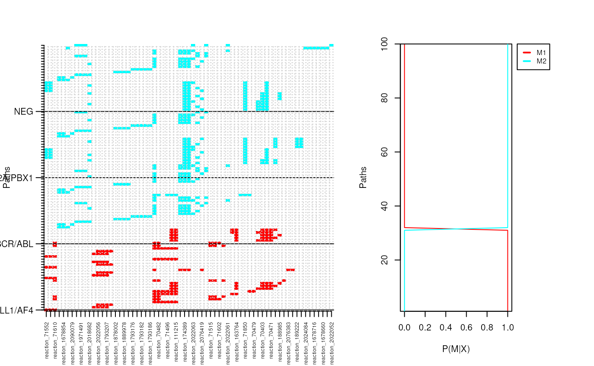
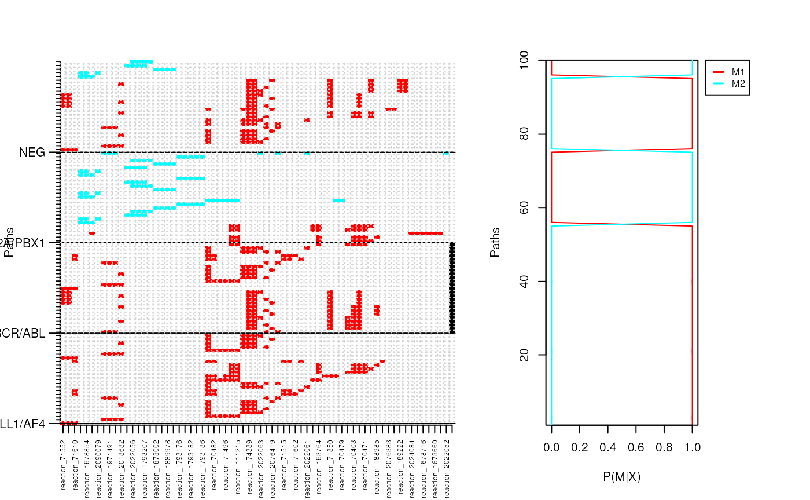
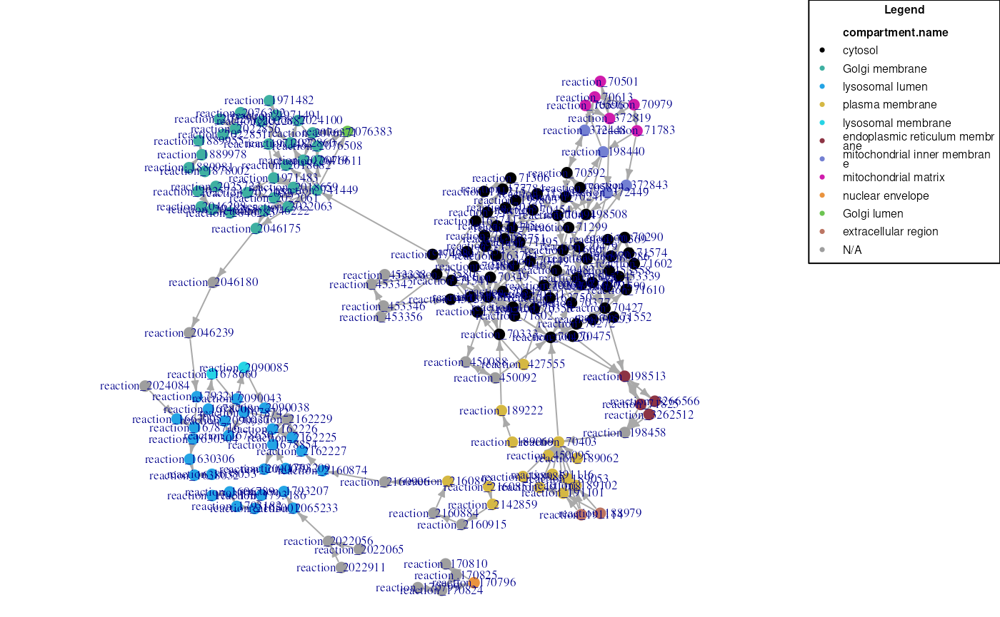
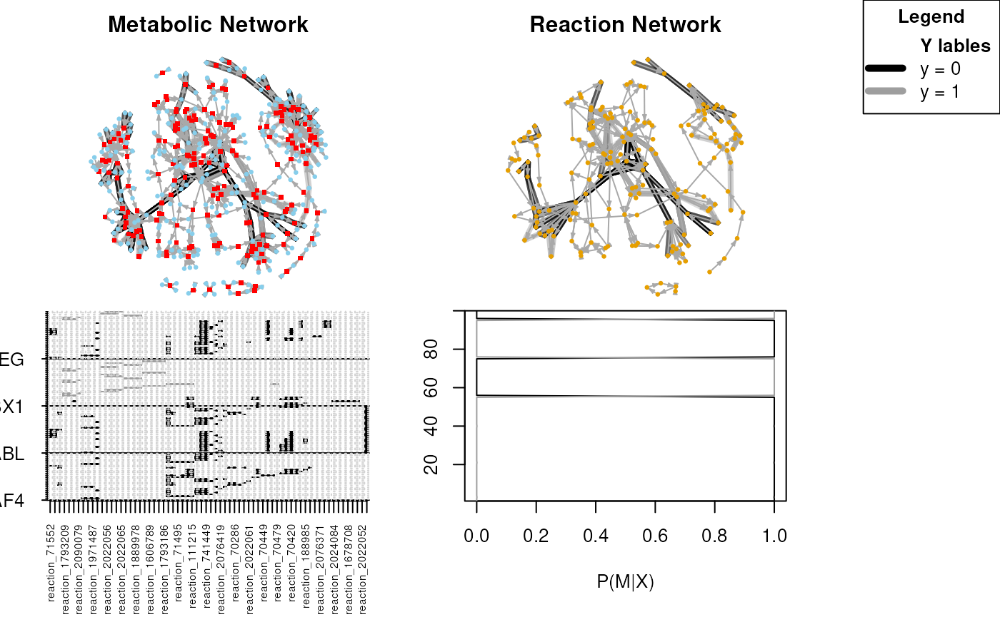

vignettes/NPMVignette.Rmd
NPMVignette.Rmd
R version: R Under development (unstable) (2023-02-16
r83857)
Bioconductor version: 3.17
Package version: 1.35.5
NetPathMiner implements a flexible module-based process flow for network path mining and visualization, which can be fully integrated with user-customized functions. It supports construction of various types of genome scale networks from three different pathway file formats, enabling its utility to most common pathway databases. In addition, NetPathMiner provides different visualization techniques to facilitate the analysis of even thousands of output paths.
This document provides a general overview of the functionalities presented in NetPathMiner (NPM) package. Below, we provide a step-by-step tutorial starting by installation instructions followed by a guide on how to use the package functions perform different network analyses.
To report bugs and arising issues, please visit https://github.com/ahmohamed/NetPathMiner
NPM depends on libxml2 and libSBML to process pathway files.Installation or running certain functions MIGHT fail if these prerequisite libraries are not available. Please read through the following instructions.
Make sure your system has library libxml2 installed. In Mac OSX 10.6 or later, libxml2 are built in. For Linux users also, this is almost always the case, however, developing headers may be missing. To install libxml2 and the headers:
sudo apt-get install libxml2
sudo apt-get install libxml2-devInstalling libSBML for Unix users is optional. However, NetPathMiner will not be able to process SBML files. If you will not use SBML functions, you can skip this part.
From the website of libSBML http://sbml.org/Software/libSBML, you can directly
download the binaries suitable for your system from
Download libSBML link. You can follow the installation
instructions on the website.
If you are installing the package through Bioconductor, you don’t
have to install external libraries. However, currently the Bioconductor
version for Windows doesn’t support SBML processing. Alternatively, we
have prepared all dependencies in a tar file, downloadable from https://github.com/ahmohamed/NPM_dependencies . Please
download the file and place in in the home directory of R (type R
RHOME in command prompt to locate it), before installation.
Unless you want to use customized libraries, you can skip the rest of this section.To use customized libraries, you have to compile them and provide them to R at the time of installation. This is not a trivial task, please be sure you really need these custom libraries.
NetPathMiner expects an enviroment variable LIB_XML or
LIB_XML2 pointing to directory where libxml2 is installed.
This directory should have both the compiled library (DLL file) and the
header files.
You can download libxml2.dll from http://sourceforge.net/projects/gnuwin32/files/libxml/
among other sources. Please, place it in a bin folder under
the installation directory.
You will need also the header files, which can be obtained from NPM_dependecies.tar file. After extracing it, copy the include directory to the installation directory.
Finally, set the LIB_XML2 variable to point to the
installation directory, which should now contain dll files inder
bin and header files under include.
Since libSBML is a C++ libraries, it needs to be compiled using GCC compiler. Unforturantely, there is no binary version for Windows comipled with GCC. To use libSBML, you need to build it from source.
First, dowload source package from http://sourceforge.net/projects/sbml/files/libsbml/ ,
extract it. You will need also MinGW http://www.mingw.org/ or the 64-bit version http://mingw-w64.sourceforge.net/ depending on your
system. Add mingw/bin to your PATH, by editing eviroment
variables.
Second, you need CMake http://www.cmake.org/ . You can follow the instructions at http://sbml.org/Software/libSBML/docs/java-api/libsbml-installation.html#windows-configuring , however, choose “MinGW Makefiles” instead of “Visual Studio 10”.
After finishing the CMake step, use the MinGW’s make.exe
to compile libSBML. Copy the dependencies you used during the
compilation to the bin directory. Set the enviroment
variable LIB_SBML to point the installation directory,
which should now contain dll files inder bin and header
files under include
NetPathMiner depends on package igraph to represent network objects. Installing igraph is required for the package to work. You will also need devtools package to install directly from github. NetPathMiner suggests package rBiopaxParser to process BioPAX files and RCurl to download annotations from the web. NetPathMiner can still work without installing the suggested packages, but you will not be able to use the aforementioned functionalities.
Package devtools is available at CRAN. For Windows, this seems to depend on having Rtools for Windows installed. You can download and install this from: http://cran.r-project.org/bin/windows/Rtools/
To install R package devtools call:
install.packages("devtools")For Unix users, make sure your Linux has library libcurl installed. Check out:
locate libcurl
locate curl-configIf these are not found (usually the developer version is missing), most Linux users will be able to fix this by running:
sudo apt-get install libcurl4-openssl-devYou will now be able to install R package RCurl. In R console:
install.packages("RCurl")If you encounter other problems check out http://www.omegahat.org/RCurl/FAQ.html
Package rBiopaxParser is available on Bioconductor. For installation instructions check out http://www.bioconductor.org/packages/release/bioc/html/rBiopaxParser.html or call:
if (!requireNamespace("BiocManager", quietly=TRUE))
install.packages("BiocManager")
BiocManager::install("rBiopaxParser")to install it right away.
If everything went well you will be able to install the NetPathMiner package.
In R console, type:
if (!requireNamespace("BiocManager", quietly=TRUE))
install.packages("BiocManager")
BiocManager::install("NetPathMiner")In R console, type:
library(devtools)
install_github(repo="NetPathMiner", username="ahmohamed")Here we create a network from a pathway file. Pathway files can be downloaded from a verity of databases, like (KEGG)[http://www.kegg.jp/kegg/pathway.html], (Reactome)[http://www.reactome.org/], (Pathway Interaction Database (PID))[http://pid.nci.nih.gov/] and (BioModels)[http://www.ebi.ac.uk/biomodels-main/].
NPM supports processing KGML, SBML and BioPAX. Different databases export pathway information in different formats. Depending on the format you are using, you can choose the corresponding NPM function.
graph <- KGML2igraph(filename = file)
graph <- SBML2igraph(filename = file)Note that SBML2igraph will not work unless you had libSBML during
installation. For BioPAX format, rBiopaxParser package is
needed.
library(rBiopaxParser)
biopax = readBiopax(file)
graph <- BioPAX2igraph(biopax = biopax)If you want to create a genome-scale network, you may want to process multiple files into a single network. To do that, you can either provide a list of files.
graph <- KGML2igraph(filename = c(file1, file2))or input the directory containing the files.
graph <- KGML2igraph(filename = ".")If you are processing SBML or BioPAX files, you can specify which annotation attributes to extract.
# Extract all MIRIAM identifiers from an SBML file.
graph <- SBML2igraph(filename = file, miriam = "all")
# Extract only miram.go identifiers from a BioPAX file.
graph <- BioPAX2igraph(biopax = biopax, miriam = "go")The above command gives us a bipartite metabolic network. You may be interested in protein-protein interaction, and you would like to get a network in which genes are vertices, and edges represent relationships. In NPM, you can do that by:
graph <- KGML2igraph(filename = file, parse.as = "signaling")
graph <- KGML2igraph(filename = file, parse.as = "signaling",
expand.complexes = TRUE)For this tutorial, we will use an An example metabolic network of Carbohydrate metabolism extracted from SBML file from Reactome database.
data("ex_sbml")
graph <- ex_sbml
graph## IGRAPH 1981d4c DN-- 432 662 --
## + attr: source (g/c), type (g/c), name (v/c), attr (v/x), reactions
## | (v/l), shape (v/c), color (v/c), stoichiometry (e/n)
## + edges from 1981d4c (vertex names):
## [1] reaction_71850 ->species_113592 reaction_71850 ->species_29728
## [3] reaction_71496 ->species_75970 reaction_71496 ->species_29578
## [5] reaction_2046222->species_2046166 reaction_2046222->species_742343
## [7] reaction_2162229->species_2162232 reaction_2162229->species_2162231
## [9] reaction_2162226->species_1678868 reaction_2162226->species_1678743
## [11] reaction_70403 ->species_70113 reaction_2162227->species_1678868
## [13] reaction_2162227->species_2162223 reaction_2162225->species_1678743
## + ... omitted several edgesOnce we have our network, we can use igraph functions to explore it. First, we view vertices and edges using V() and E() functions respectively.
Network vertices:
## + 6/432 vertices, named, from 1981d4c:
## [1] reaction_71850 reaction_71496 reaction_2046222 reaction_2162229
## [5] reaction_2162226 reaction_70403Edge Vertices:
## + 6/662 edges from 1981d4c (vertex names):
## [1] reaction_71850 ->species_113592 reaction_71850 ->species_29728
## [3] reaction_71496 ->species_75970 reaction_71496 ->species_29578
## [5] reaction_2046222->species_2046166 reaction_2046222->species_742343Reaction vertices only:
## + 6/432 vertices, named, from 1981d4c:
## [1] reaction_71850 reaction_71496 reaction_2046222 reaction_2162229
## [5] reaction_2162226 reaction_70403All vertex annotation attributes are stored in “attr” attribute. To view the annotation for a certain vertex, you can index it by name.
V(graph)[ "reaction_71850" ]$attr## [[1]]
## [[1]]$name
## [1] "1,3-bisphospho-D-glycerate + ADP <=> 3-phospho-D-glycerate + ADP"
##
## [[1]]$reversible
## [1] FALSE
##
## [[1]]$reactants
## [1] "species_29800" "species_29370"
##
## [[1]]$reactant.stoichiometry
## [1] 1 1
##
## [[1]]$products
## [1] "species_29728" "species_113592"
##
## [[1]]$product.stoichiometry
## [1] 1 1
##
## [[1]]$kinetics
## named list()
##
## [[1]]$genes
## [1] "phosphoglycerate kinase 1 complex [cytosol]"
##
## [[1]]$compartment
## [1] "compartment_70101"
##
## [[1]]$compartment.name
## [1] "cytosol"
##
## [[1]]$pathway
## [1] "Metabolism of carbohydrates"
##
## [[1]]$miriam.obo.go
## [1] "GO:0004618"
##
## [[1]]$miriam.reactome
## [1] "REACT_1186" "REACT_5354"
##
## [[1]]$miriam.ec
## [1] "2.7.2.3"
##
## [[1]]$miriam.uniprot
## [1] "P00558"
##
## [[1]]$miriam.obo.chebi
## [1] "CHEBI:18420"
##
## [[1]]$miriam.kegg.compound
## [1] "C00305"
##
## [[1]]$compartment.miriam.obo.go
## [1] "GO:0005829"Here, our reaction vertex annotations describing the chemical transition. You can also notice annotations starting with “miriam” key word. MIRIAM is a standard format for writing biological identifiers. You can explore the details of this annotation system on http://www.ebi.ac.uk/miriam/main/collections. To list all vertex attributes:
getAttrNames(graph)## [1] "name" "reversible"
## [3] "reactants" "reactant.stoichiometry"
## [5] "products" "product.stoichiometry"
## [7] "kinetics" "genes"
## [9] "compartment" "compartment.name"
## [11] "pathway" "miriam.obo.go"
## [13] "miriam.reactome" "miriam.ec"
## [15] "miriam.uniprot" "miriam.obo.chebi"
## [17] "miriam.kegg.compound" "compartment.miriam.obo.go"Since annotations tend to be incomplete, NPM provides a function to
check the coverage of each attribute. The function also list the number
of vertices having multiple attribute values. For example, vertices with
multiple miriam.kegg.genes annotations can be view as
protein complexes.
getAttrStatus(graph, pattern = "^miriam.")## missing single complex coverage.pct
## miriam.obo.go 269 163 0 38
## miriam.reactome 0 269 163 100
## miriam.ec 294 138 0 32
## miriam.uniprot 184 131 117 57
## miriam.obo.chebi 230 188 14 47
## miriam.kegg.compound 289 134 9 33NPM also implements an Attribute Fetcher, where you can convert one annotation to another. The Attribute Fetcher requires RCurl installed, because it uses the online web service of BridgeDb http://www.bridgedb.org/.
require("RCurl")
# Fetch uniprot annotation
graph <- fetchAttribute(graph, organism = "Homo sapiens", target.attr = "miriam.ncbigene" , source.attr = "miriam.uniprot")
# Fetch ChEBI annotation.
graph <- fetchAttribute(graph, target.attr = "miriam.chebi", source.attr = "miriam.kegg.compound")You can also use the Attribute Fetcher to obtain Affymetrix annotation needed for microarray analysis.
NetPathMiner can convert between different network representations. Given a bipartite metabolic network, reaction network is created by removing metabolite vertices and keeping them as edge attributes. This is useful to get adjacent vertices (now reactions) to have gene annotations needed for gene expression mapping.
rgraph <- makeReactionNetwork(graph, simplify=FALSE)
rgraph## IGRAPH b2aceb8 DN-- 180 303 --
## + attr: source (g/c), type (g/c), name (v/c), attr (v/x), compound
## | (e/x), attr (e/x)
## + edges from b2aceb8 (vertex names):
## [1] reaction_71850->reaction_70420 reaction_71850->reaction_450088
## [3] reaction_71850->reaction_71541 reaction_71850->reaction_70467
## [5] reaction_71850->reaction_70486 reaction_71850->reaction_163773
## [7] reaction_71850->reaction_70333 reaction_71850->reaction_71654
## [9] reaction_71850->reaction_73580 reaction_71850->reaction_453337
## [11] reaction_71850->reaction_70355 reaction_71850->reaction_174392
## [13] reaction_71850->reaction_70349 reaction_71850->reaction_174389
## + ... omitted several edgesSince gene annotations are rarely complete, we can further remove reaction vertices that are missing gene annotations. This is particularly meaningful when reactions are translocation or spontaneous reactions, which are not catalysed by genes. We can then remove such reactions by:
rgraph <- simplifyReactionNetwork(rgraph)
rgraph <- makeReactionNetwork(graph, simplify=TRUE)Some reaction vertices will be catalysed by more than one enzyme. We
can expand these vertices to get the gene network.
# Expand complexes of gene network.
ggraph <- expandComplexes(rgraph, v.attr = "miriam.uniprot",
keep.parent.attr= c("^pathway", "^compartment"))
# Convert reaction network to gene network.
ggraph <- makeGeneNetwork(rgraph)expandComplexes offers manipulation of network vertices
by their attributes, that includes handling missing annotations and
annotation inheritance. Refer to the manual for for details.
Now that we have our network, we can use gene expression data to
weight the network edges. For this example we use an subset of data
provided by ALL data package. The data consist of
microarrays from 128 different individuals with acute lymphoblastic
leukemia (ALL).
The gene expression is present as Affymetrix IDs. Since we don’t have these annotations in out network, we can use Attribute Fetcher to get them.
data(ex_microarray)
# Assign weights to edges.
if(require("RCurl") && url.exists( NPMdefaults("bridge.web") ))
rgraph <- fetchAttribute(rgraph, organism = "Homo sapiens",
target.attr = "miriam.affy.probeset",
source.attr = "miriam.uniprot")Now that we checked that we have affy.probeset
annotations, we can use the weight function. The default weight function
assigns edge weights based on Pearson’s correlation of expression
profiles of adjacent genes. You can also provide you own function as a
weight.method. You can refer to the manual of this function
for details.
We can also provide sample categories as y labels. In
that case, edge weights are computed for each label separately. Here we
use Leukaemia molecular subtypes as categories.
# This requires an internet connection, and RCurl and ALL packages to be present.
# Instead, we will actually use a processed ALL data, where features are converted
# to miriam.uniprot annotation. (Next chunk)
library(ALL)
data(ALL)
rgraph <- assignEdgeWeights(microarray = exprs(ALL), graph = rgraph,
weight.method = "cor", use.attr="miriam.affy.probeset", y=ALL$mol.bio, bootstrap = FALSE)## 100 genes were present in the microarray, but not represented in the network.
## 55 genes were couldn't be found in microarray.
## Assigning edge weights for label ALL1/AF4
## Assigning edge weights for label BCR/ABL
## Assigning edge weights for label E2A/PBX1
## Assigning edge weights for label NEG
rgraph$y.labels## [1] "ALL1/AF4" "BCR/ABL" "E2A/PBX1" "NEG"## [[1]]
## [1] 0.48975367 0.15652908 0.48692055 0.03109587
##
## [[2]]
## [1] 0.07300260 0.08559941 0.08657545 0.05117537
##
## [[3]]
## [1] 0.2137908 0.7902335 0.7329898 0.3139489
##
## [[4]]
## [1] 0.6218986 0.5860552 0.2311897 0.1017890
##
## [[5]]
## [1] 0.07300260 0.08559941 0.08657545 0.05117537
##
## [[6]]
## [1] 0.40936252 0.32598614 -0.52609992 0.05701338Edges are now weighted by the correlation of connected genes. We can find highly correlated paths within the network by maximising the edge weight.
NetPathMiner provides two methods to accomplish that. First,
probabilistic.shortest.path formulates the problem as
finding shortest paths in a network by transforming edge weights by
their empirical cumulative distribution function (ECDF). Finding the
shortest path is equivalent to finding the least probable path given
this empirical distribution. The code below gets the 100-shortest
paths.
ranked.p <- pathRanker(rgraph, method = "prob.shortest.path",
K = 25, minPathSize = 6)## Extracting the 25 most probable paths for ALL1/AF4## Extracting the 25 most probable paths for BCR/ABL## Extracting the 25 most probable paths for E2A/PBX1## Extracting the 25 most probable paths for NEGSecond, value method finds paths where the sum of edge
weights are significantly higher than random paths of similar length.
The distribution of random path scores can be estimated by
samplePaths which uses Metropolis sampling technique. The
path sample can be then provided to the path ranking function. If path
sample is not provided, random edge sampling is used to estimate the
distribution.
pathsample <- samplePaths(rgraph, max.path.length = vcount(rgraph),
num.samples = 1000, num.warmup = 10)
ranked.p <- pathRanker(rgraph, method = "pvalue",
sampledpaths = pathsample ,alpha=0.1)We can get our path set as lists of edge IDs instead.
# Get paths as edge IDs.
eids <- getPathsAsEIDs(paths = ranked.p, graph = rgraph)We can also get paths as edge IDs on another network representation. In this example, we extracted paths from a reaction network. We can get the equivalent paths on the gene network by supplying the corresponding igraph object.
# Convert paths to other networks.
eids <- getPathsAsEIDs(paths = ranked.p, graph = ggraph)The size of the ranked path can be very large, making their analysis challenging. NetPathMiner offers clustering functions to group the ranked path list into few path clusters that can be investigated easily.
# Clustering.
ybinpaths <- pathsToBinary(ranked.p)
p.cluster <- pathCluster(ybinpaths, M = 2)
plotClusters(ybinpaths, p.cluster)
We can also identify a set of paths that best classify a sample
category (as a form of biomarker for example). The code below creates a
classifier for BCR/ABL subtype. Since our network is very
small, we are not able to create an accurate classifier.
p.class <- pathClassifier(ybinpaths, target.class = "BCR/ABL", M = 2)
plotClassifierROC(p.class)alt text
plotClusters(ybinpaths, p.class)
NetPathMiner offers several plotting options for networks and ranked paths. First, we can plot our network colouring vertices by their cellular compartment.
plotNetwork(rgraph, vertex.color="compartment.name")
NetPathMiner’s plotPaths function can be used to view ranked paths on the network structure. Cluster information can also be provided, so that paths belonging to the same cluster will have the same colour.
To view paths on different network representations, you can pass the networks as parameters to plotPaths, and it will do the job.
plotAllNetworks(ranked.p, metabolic.net = graph, reaction.net = rgraph,
path.clusters=p.class, vertex.label = "", vertex.size = 4)
To make use of the annotation attributes, NetPathMiner can layout vertices such that those sharing a common attribute value are plotted close to each other, and using similar colors.
layout.c <- clusterVertexByAttr(rgraph, "pathway", cluster.strength = 3)
v.color <- colorVertexByAttr(rgraph, "pathway")
plotPaths(ranked.p , rgraph, clusters=p.class,
layout = layout.c, vertex.color = v.color)Finally, for interactive visualization using Cytoscape, plotCytoscapeGML can export the graph, attributes and layout as a GML file, which can be imported directly into Cytoscape. For example:
plotCytoscapeGML(graph, file="example.gml", layout = layout.c,
vertex.size = 5, vertex.color = v.color)NetPathMiner provides functions to extract genesets utilizing annotation attributes in the network. To get genesets as lists of genes for geneset enrichment analyses:
getGeneSets(graph, use.attr="compartment", gene.attr="miriam.uniprot")Alternatively, genesets can be obtained as network structures.
getGeneSetNetworks(graph, use.attr="compartment")All networks constructed in NetPathMiner are represented as igraph
object. Users can convert these networks to Bioconductor’s graphNEL
object using toGraphNEL function
graphNEL <- toGraphNEL(graph, export.attr="^miriam.")